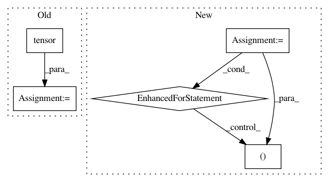

db7b74579181f9cbae3583f447d83148714a1c3d,stanza/models/classifiers/cnn_classifier.py,CNNClassifier,forward,#CNNClassifier#Any#Any#,83
Before Change
max_phrase_len = self.max_window
if max_phrase_len > min(len(x) for x in inputs):
idx = torch.tensor(self.vocab_map[self.pad], requires_grad=False, device=device)
pad_vector = self.embedding(idx)
input_tensor = []
for phrase in inputs:
// build a list of the vectors we want for this sentence / phrase
After Change
indices = torch.tensor(indices, requires_grad=False, device=device)
input_vectors = self.embedding(indices)
for unknown in unknowns:
input_vectors[unknown, :] = self.unk
// we will now have an N x emb_size tensor
// this is the input to the CNN
// there are two ways in which this padding is suboptimal
// the first is that for short sentences, smaller windows will
// be padded to the point that some windows are entirely pad
// the second is that a sentence S will have more or less padding
// depending on what other sentences are in its batch
// we assume these effects are pretty minimal
// reshape x to 1xNxE
x = input_vectors.unsqueeze(0)
input_tensor.append(x)
x = torch.stack(input_tensor)
In pattern: SUPERPATTERN
Frequency: 3
Non-data size: 5
Instances
Project Name: stanfordnlp/stanza
Commit Name: db7b74579181f9cbae3583f447d83148714a1c3d
Time: 2020-06-15
Author: horatio@gmail.com
File Name: stanza/models/classifiers/cnn_classifier.py
Class Name: CNNClassifier
Method Name: forward
Project Name: IBM/adversarial-robustness-toolbox
Commit Name: c17c92d84ec9216b781ecfbc25c6df225e2fd4f1
Time: 2020-11-11
Author: M.N.Tran@ibm.com
File Name: art/defences/preprocessor/audio_filter_pytorch.py
Class Name: AudioFilterPyTorch
Method Name: __call__
Project Name: tensorly/tensorly
Commit Name: daa2c7ea2bf2c203ddef038f2eaf9d70bc07c7d4
Time: 2020-01-01
Author: roald.marie@gmail.com
File Name: tensorly/tests/test_parafac2_tensor.py
Class Name:
Method Name: test_validate_parafac2_tensor